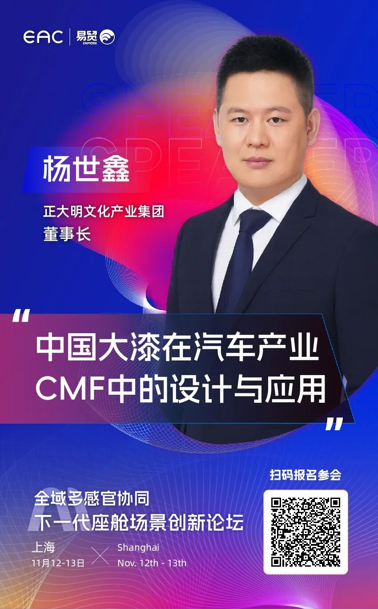
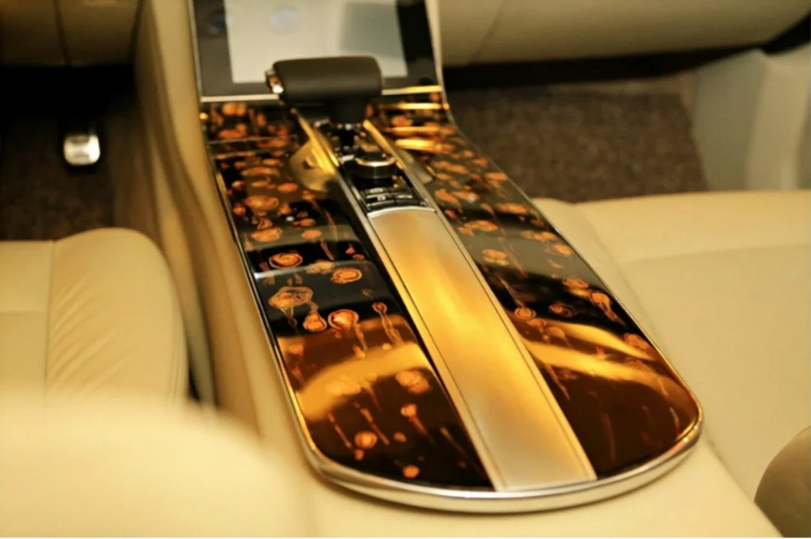

편집자 주: 본 글은 포럼 개막 전 「EAC内外饰与座舱」이 게시한 연사 예고(2026년 9월 21일)입니다. 포럼은 11월 12~13일 상하이에서 개최되었으며, 현장 보도는 「정다밍 양세신 회장, EAC 차세대 콕핏 포럼에서 강연」을 참고하십시오.

이마오(Emmore) 주최, EAC内外饰与座舱이 공식 미디어를 맡은 「EAC 차세대 콕핏 시나리오 혁신 포럼」은 2026년 11월 12~13일 상하이에서 개최되었습니다. EAC는 정다밍문화산업그룹 양세신 회장을 초청해 「중국 옻칠의 자동차 산업 CMF 설계와 응용」을 강연하도록 했습니다.
정다밍문화산업그룹 소개
정다밍문화산업그룹(Zhengdaming Cultural Industry Group)은 백년간 천연 옻칠에 힘써 왔으며, 산시 안캉 핑리(平利) 우왕칠(牛王漆) 핵심 산지의 천연 생칠 자원을 기반으로 「옻나무 재배 → 채칠 → 정제 가공 → 칠기 제작 → 문화 전파」 풀체인을 구축했습니다. 산시 정다밍문화산업, 산시 룽터우궈치문화산업, 시안 칠기한탕문화산업, 우왕생칠농민전업협동조합, 우왕생칠연구소 등 다섯 개 기업 주체를 보유하고, 정다밍칠·룽터우궈치·우왕궈치·쓰스지(岁时记) 네 브랜드로 「소재—기물—생활」 전 시나리오를 커버합니다. 「마음의 정직함, 기물의 명료함(正于心，明于器)」으로 품질의 높이를 정의하는 플래그십 브랜드 정다밍은 진짜 천연 생칠과 무형문화유산 장인의 수작업을 바탕으로 정부 선물용·문화 소장용·고급 라이프스타일 시장에 칠기 커스텀과 칠장(髹飾) 토탈 솔루션을 제공합니다.

우왕생칠 유칠(油漆) 기예 소개
우왕생칠 유칠 기예는 「중국 옻나무의 고향」 산시 안캉 핑리에 전해지는 성급(省级) 무형문화유산입니다. 원문은 사진과 함께 우왕칠의 품질 특징과 세대를 이어온 칠장(漆匠) 체계를 소개하며, 강연에서 다루는 자동차 응용의 원류가 되는 소재 공급 체계를 보여줍니다.

연사 소개: 양세신
중국공산당 당원, 칭화대 MBA, 고급 공예미술사, 전 화웨이(华为) A제품부 PM. 현 정다밍문화산업그룹 회장으로서 중국 전통 칠예의 현대적 전환과 무형문화유산 산업의 현대화에 오랫동안 헌신해 왔습니다. 체계적인 경영학 훈련을 토대로 칠공예에 대한 깊은 이해와 경외를 영혼으로 삼아, 전략 경영·브랜드 운영·산업 사고를 오래된 수예에 주입하고, 옻나무 재배·생칠 정제·칠기 연구개발·문창(文创) 파생·무형유산 전습을 일체화한 풀체인 기업 형태로의 전환을 추진했으며, 시안 칠기한탕문화산업 유한공사 설립에 참여해 기업 전략 기획·시장 개척·현대적 경영 관리 제도 구축을 주도했습니다.
산업 협력 차원에서는 산커수(三棵树) 도료와 룽터우궈치의 전략적 협력을 기획·추진하며 전통 칠예와 현대 도료 공업의 융합 경로를 탐색했습니다. 전승·인재 양성 차원에서는 칠예 문화 커리큘럼 체계를 개발하고 누적 100명 이상의 수강생을 교육하여 우왕생칠 유칠 기예의 살아있는 전승과 산업화 발전을 뒷받침하고 있습니다. 디자이너의 미적 직관과 관리자의 체계적 이성을 겸비하여 정부·기업·대학·전승자 사이의 대화와 협력의 다리를 놓는 데 탁월하며, 「산업화의 방식으로 수예를 지키고, 시장화의 언어로 전통을 말한다」는 신념을 실천하고 있습니다.


포럼 소개
포럼은 차량 톱레벨 관점에서 시장·사용자 트렌드, 차량 시나리오 구현, 전역 오감 인터랙션,人车家(홈-카) 크로스오버, AI 대형 모델 등 방향을 다루었으며, 「신소재 반복 아래의 프리미엄 콕핏 업그레이드: 지속가능성·다감각·국산화의 산업 균형과 착지 전략」 등 원탁 토론도 진행되었습니다.
포럼은 11월 12~13일 개최되었습니다. 현장 보도는 「정다밍 양세신 회장, EAC 차세대 콕핏 포럼에서 강연」과 「EAC 차세대 콕핏 시나리오 혁신 포럼 폐막」(전재)에서 읽으실 수 있습니다.